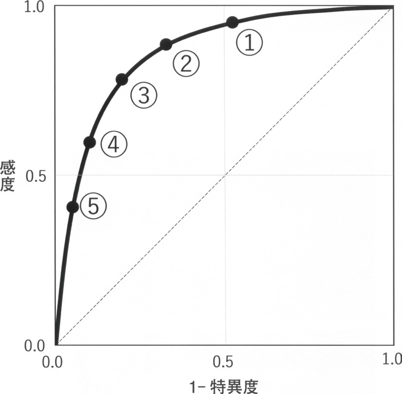

| 選択肢 | 解説 |
|---|---|
| ａ 7％ | 誤り。ベイズの定理の手順を1つでも飛ばすと出やすい値——たとえば検査前確率30％をそのままオッズとして使わず、検査前確率と（1－特異度）を混同して掛け合わせると小さい値に流れる。検査前確率は必ずオッズ（p/(1－p)）へ変換してから尤度比を掛けること。 |
| ｂ 15％ | 誤り。陰性尤度比（(1－感度)/特異度）を使って計算するとこのように小さい値に寄る。設問は「陽性の場合」なので使うのは陽性尤度比（感度/(1－特異度)）であり、陰性尤度比ではない——陽性/陰性の取り違えは本章で繰り返し出る（NO.278も同じ構造）。 |
| ◯ ｃ 51％ | ◯ 正しい。検査前オッズ＝0.3/0.7＝3/7≒0.429。陽性尤度比＝感度/(1－特異度)＝0.99/0.4＝2.475。検査後オッズ＝0.429×2.475≒1.06。検査後確率＝オッズ/(1＋オッズ)＝1.06/2.06≒0.51＝51％。2×2表で実数を当てはめても同じ結果になる（本問「深掘り」参照）。 |
| ｄ 96％ | 誤り。感度と特異度を取り違えて陽性尤度比＝0.6/(1－0.99)＝60として計算すると出る値——検査前オッズ0.429×60≒25.7、検査後確率≒96％となり数値としては実在するが前提の代入が逆。感度99％・特異度60％という数字の大小をそのまま逆に使ってしまう典型的な取り違えで、実数で検算すると a（真陽性）とb（偽陽性）の対応が崩れているとわかる。 |
| ｅ 99％ | 誤り。感度の数値99％をそのまま検査後確率として答えてしまうもの。感度は「病気を持つ人が陽性になる割合」であって「陽性になった人が病気を持つ割合（検査後確率＝陽性的中率）」ではない——両者は意味も分母も違う別の量で、感度が高いからといって陽性的中率が同じ高さになるとは限らない（有病率が低いと陽性的中率は大きく下がる）。 |
| SLEあり | SLEなし | 合計 | |
|---|---|---|---|
| 検査陽性 | a＝297（真陽性） | b＝280（偽陽性） | 577 |
| 検査陰性 | c＝3（偽陰性） | d＝420（真陰性） | 423 |
| 合計 | 300 | 700 | 1,000 |

| 選択肢 | 解説 |
|---|---|
| ◯ ａ ① | ◯ 正しい。①は5点の中で最も左上（縦軸の感度が最も高い位置）にある。偽陰性率＝1－感度なので、感度が最も高い点＝偽陰性率が最も低い点。図の縦軸を上から順に見ると①＞②＞③＞④＞⑤の順で感度が高く、①が最も見逃し（偽陰性）が少ないカットオフ値になる。 |
| ｂ ② | 誤り。②は①よりわずかに感度が低い（グラフでやや下側の）点。「最も低い」を問われているので、①より劣る②は正解にならない。 |
| ｃ ③ | 誤り。③はさらに感度が下がり、1－特異度（偽陽性率）も小さくなった中間の点。特異度は①より高いが、設問は「偽陰性率」＝感度側を問うている。 |
| ｄ ④ | 誤り。④は感度がさらに低く、偽陰性率はむしろ大きい。グラフ左下寄りに位置する点ほど特異度は高いが感度は低い——確定診断向きのカットオフであって、見逃しを減らす方向とは逆。 |
| ｅ ⑤ | 誤り。⑤は5点の中で最も左下＝感度が最も低い点で、偽陰性率は最大になる。⑤は特異度を最優先したカットオフであり、「偽陰性率が最も低い」を問う本問とは正反対の位置。 |
| 選択肢 | 解説 |
|---|---|
| ａ 感度の高い検査が陽性のとき | 誤り。感度の高い検査が陽性でも、除外にはあまり役立たない。感度が高い検査は偽陽性が多くなりやすい——特異度とは独立の性質なので、感度だけを見て「陽性＝確定」とは言えない。 |
| ◯ ｂ 感度の高い検査が陰性のとき | ◯ 正しい。SnNout（Sensitivity high, Negative → out）——感度が高い検査で陰性なら、その病気を除外してよい。感度が高い＝病気がある人はほぼ全員陽性になる（偽陰性がほぼ0）ということなので、陰性という結果は「病気がある人ではほぼ起こらない」——したがって陰性なら病気は無いと考えてよい。SLEに対する抗核抗体（NO.273・感度99％）が典型で、陰性ならSLEはほぼ除外できる。 |
| ｃ 特異度の高い検査が陽性のとき | 誤り。これは除外ではなく確定に有用な組み合わせ（SpPin：Specificity high, Positive → in）。特異度が高い検査は病気が無い人がほぼ全員陰性になる（偽陽性がほぼ0）ので、陽性なら病気があると確定してよい。抗dsDNA抗体（特異度が高い）が陽性ならSLEをほぼ確定できるのが好例。 |
| ｄ 特異度の高い検査が陰性のとき | 誤り。特異度が高い検査が陰性であっても、病気の除外には直接結びつかない。特異度は「病気が無い人が陰性になる割合」であって「病気がある人が陽性になる割合（感度）」とは独立なので、特異度が高いことは見逃し（偽陰性）の少なさを保証しない。 |
| ｅ 感度/（1－特異度）が1 より大きいとき | 誤り。この式は陽性尤度比（NO.273・277・280で使う指標）で、「陽性という結果がどれだけ病気らしさを増やすか」を表す。陽性尤度比が1より大きいことは大半の実用的な検査で常に成り立つ（無意味なほど緩い条件）ため、除外に有用かどうかの基準にはならない。 |
| 表1 診断予測スコア | |
|---|---|
| めまいの持続時間2分以内 | 1点 |
| 寝返りで誘発される | 2点 |
| 安静時にめまいがある | －1点 |
| 表2 スコア合計別の陽性尤度比 | |
|---|---|
| －1点 | 0.1 |
| 0点 | 0.2 |
| 1点 | 1.3 |
| 2点 | 2.8 |
| 3点 | 6.8 |
| 選択肢 | 解説 |
|---|---|
| ａ 8％ | 誤り。スコア合計を実際より低く見積もると（例えば0点＝尤度比0.2）このあたりの小さい値に寄る。本症例は「寝返りで誘発（＋2）」と「持続2分以内（＋1）」が両方そろっており、スコアはもっと高い。 |
| ｂ 19％ | 誤り。スコア1点（尤度比1.3）で計算すると出やすい値——「寝返りによる誘発」の＋2点を見落とし、持続時間の＋1点だけで計算すると合計が過小評価される。 |
| ｃ 47％ | 誤り。スコア2点（尤度比2.8）で計算すると出る値——「安静時にめまいがある」を誤って－1点として加えてしまう（本症例は安静時のめまいは無いので、この減点項目は該当しない）とスコアが1つ低く出る。 |
| ｄ 65％ | 誤り。65％という数値自体はあり得る範囲だが、正しい手順（後述）で計算すると82％になる。オッズへの変換を省略し確率のまま尤度比を掛けるなど、計算の途中でオッズ⇔確率の変換を誤ると近い値が出ることがある。 |
| ◯ ｅ 82％ | ◯ 正しい。本症例のスコアは寝返りで誘発（＋2）＋持続2分以内（＋1）＝3点（安静時のめまいは無いので－1点は加わらない）。表2よりスコア3点の陽性尤度比は6.8。検査前オッズ＝0.4/0.6＝2/3≒0.667。検査後オッズ＝0.667×6.8≒4.53。検査後確率＝4.53/(1＋4.53)≒0.82＝82％。 |
| 選択肢 | 解説 |
|---|---|
| ａ 8 | 誤り。感度と特異度を取り違えて0.96/(1－0.84)＝6を計算し、さらに丸め方を変えるとこの付近の値が出ることがある。正しくは感度を分子、(1－特異度)を分母に置く。 |
| ｂ 16 | 誤り。特異度をそのまま分母に使う（0.84/0.96）など、(1－特異度)への変換を省略すると1に近い小さな値になり、そこから逆算しても16という値は正しい手順からは出ない——陽性尤度比の分母は必ず1－特異度であることを確認する。 |
| ◯ ｃ 21 | ◯ 正しい。陽性尤度比＝感度/(1－特異度)＝0.84/(1－0.96)＝0.84/0.04＝21。特異度96％＝偽陽性率は4％しかないという意味で、分母が小さいぶん尤度比は大きく（21倍）跳ね上がる——特異度が1に近づくほど陽性尤度比は急激に大きくなる（NO.277・280と同じ式だが、特異度の高さの違いが尤度比の大きさに直結することを示す好例）。 |
| ｄ 32 | 誤り。感度と(1－特異度)の対応を保ったまま計算すると21になり、32という値には正しい手順からは至らない。四則演算の途中で桁や分母分子を取り違えると生じやすい値。 |
| ｅ 40 | 誤り。0.84/0.04を誤って別の割り算（例えば0.96/0.024相当）にすり替えると出やすい大きめの値。陽性尤度比の式そのものに立ち返って検算すれば21に収束する。 |
| 特異度 | 1－特異度 | 感度84％での陽性尤度比 |
|---|---|---|
| 60％ | 0.40 | 0.84/0.40＝2.1 |
| 90％ | 0.10 | 0.84/0.10＝8.4 |
| 96％ | 0.04 | 0.84/0.04＝21（本問） |
| 99％ | 0.01 | 0.84/0.01＝84 |
| 選択肢 | 解説 |
|---|---|
| ａ 80％ | 誤り。これは検査前確率（80％）そのままで、検査結果（陰性）をまったく反映していない。陰性という結果を得た以上、確率は検査前より下がるはずである。 |
| ｂ 72％ | 誤り。陽性尤度比（0.6/0.1＝6）を誤って陰性の場面で使うとこのように高めの値に寄る——「陰性」の設問には陰性尤度比を使う。 |
| ◯ ｃ 64％ | ◯ 正しい。検査前オッズ＝0.8/0.2＝4。陰性尤度比＝(1－感度)/特異度＝(1－0.6)/0.9＝0.4/0.9≒0.444。検査後オッズ＝4×0.444≒1.78。検査後確率＝1.78/(1＋1.78)≒0.64＝64％。感度60％と控えめなため、陰性であっても急性心筋梗塞の確率は64％までしか下がらない——「陰性だから安心」とは言えない典型例。 |
| ｄ 54％ | 誤り。64％に近いがオッズ⇔確率の変換を1ステップ省略するとこの付近の値になりやすい。検査後オッズを求めた後、必ずオッズ/(1＋オッズ)で確率へ戻す手順を踏むこと。 |
| ｅ 50％ | 誤り。感度と特異度を50％ずつのような「五分五分」の直感で扱うとこの値に寄りやすいが、本問の感度60％・特異度90％という非対称な数字を正しく使えば64％になる。 |
| 選択肢 | 解説 |
|---|---|
| ａ 「治療法について何かご希望はありますか」 | 誤り。これは患者の意向・希望を尋ねる質問であり、「ここまでの説明が伝わったか」を確認する質問ではない。インフォームド・コンセントの過程では重要な問いだが、設問が問う「理解の確認」には当たらない。 |
| ◯ ｂ 「今までの説明で分からないことはありますか」 | ◯ 正しい。ここまでの説明内容を患者が理解できたかを直接確認する質問（いわゆるteach-back／理解度の確認）。「分からないことはないか」と尋ねることで、医師が一方的に話して終わりにせず、患者側の理解度を医師が把握できる。検査結果が陰性でも急性冠症候群を否定しきれないという、患者にとって分かりにくく不安の残る状況だからこそ、理解の確認が特に重要になる場面である。 |
| ｃ 「今後についてご家族に話したほうが良いですか」 | 誤り。これは情報共有の範囲（誰に伝えるか）についての確認であり、患者本人の理解を確認する質問ではない。 |
| ｄ 「なぜこの病気になってしまったとお考えですか」 | 誤り。これは患者の病気に対する認識・解釈モデルを尋ねる質問（医師の説明の理解確認とは別の目的）。病歴聴取の初期段階で患者の考えを引き出すために使う問いかけに近く、「ここまでの説明」の理解確認とは向きが異なる。 |
| ｅ 「こちらの病院で検査と治療を受けるのでよろしいでしょうか」 | 誤り。これは今後の方針への同意を取る質問であり、説明内容そのものが伝わったかどうかの確認ではない。同意（コンセント）の確認と理解（アンダースタンディング）の確認は目的が異なることを区別する。同意は理解が前提になるため、本来は理解の確認の後に行うべき問いかけである。 |
| 質問の向き | 該当する選択肢 |
|---|---|
| 患者の希望・意向を尋ねる | ａ |
| 説明内容の理解を確認する | ｂ（正解） |
| 情報共有の範囲を確認する | ｃ |
| 患者自身の病気の解釈モデルを尋ねる | ｄ |
| 今後の方針への同意を取る | ｅ |
| 選択肢 | 解説 |
|---|---|
| ａ 0.3 | 誤り。これは陰性尤度比＝(1－感度)/特異度＝0.2/0.6≒0.33に近い値——設問は「陽性」尤度比を問うており、陰性尤度比の式を使ってしまうとこの値に寄る。 |
| ｂ 0.5 | 誤り。特異度をそのまま(1－特異度)の代わりに使う（0.8/0.6の逆数寄り）など、式の分母を取り違えると生じやすい小さめの値。 |
| ｃ 1.3 | 誤り。感度80％をそのまま特異度80％と読み替えて0.6/(1－0.8)＝3を計算し、さらに丸め方を変えるとこの近辺の値になりうる——感度と特異度の取り違えは本章で繰り返し出る典型的な誤りである（NO.273・277と同じ形）。 |
| ◯ ｄ 2.0 | ◯ 正しい。陽性尤度比＝感度/(1－特異度)＝0.8/(1－0.6)＝0.8/0.4＝2.0。NO.277（感度84％・特異度96％→尤度比21）と比べると、本問は特異度が60％と低いため陽性尤度比はずっと小さい（2.0止まり）——陽性という結果の重みは特異度の高さに強く左右されることがこの2問の対比からわかる。 |
| ｅ 4.8 | 誤り。0.8/0.4を計算する過程で分母を(1－特異度)ではなく別の値にすり替えると生じうる値だが、正しい手順では2.0に収束する。数値をそのまま暗算せず、必ず感度・(1－特異度)の順で式に書き出してから計算するとこの種の誤りを避けやすい。 |
| 陽性尤度比 | 解釈の目安 |
|---|---|
| 1に近い | 検査結果が診断にほとんど影響しない |
| 2〜5 | 診断への影響はわずかにとどまる（本問の2.0はここ） |
| 5〜10 | 中等度に診断を後押しする |
| 10以上 | 強く診断を後押しする（NO.277の21はここ） |
| 選択肢 | 解説 |
|---|---|
| ａ 感 度 | 誤り。感度＝a/(a＋c)は病気がある人だけを分母にした割合であり、検査前確率（有病率）が変わっても、その検査自体の性能を表す数値として一定に保たれる。感度は集団構成が変わっても変化しない、検査に固有の特性。NO.273・276の陽性尤度比の分子に使われているのもこの不変の感度。 |
| ｂ 特異度 | 誤り。特異度＝d/(b＋d)も病気が無い人だけを分母にした割合で、感度と同じく検査前確率に依存しない。感度・特異度はどちらも「疾患の有無で層別した中での検査の正しさ」を測るため、有病率という集団側の要因からは独立している。 |
| ◯ ｃ 適中度〈的中度〉 | ◯ 正しい。陽性的中率＝a/(a＋b)・陰性的中率＝d/(c＋d)は検査結果で層別した中での正しさを表す割合で、検査前確率（有病率）が変わると分母のa,b,c,dの実数比が変わるため値そのものが変化する。NO.273がまさにこの計算——検査前確率30％のとき陽性的中率は51％だったが、検査前確率がもっと低い集団（例えばスクリーニング全住民）で同じ検査を使えば、陽性的中率はもっと低くなる（偽陽性の実数が相対的に増えるため）。 |
| ｄ 偽陰性率 | 誤り。偽陰性率＝1－感度であり、感度と同じ理由で検査前確率には依存しない。偽陽性率（＝1－特異度）も同様に検査前確率とは無関係。 |
| ｅ ROC 曲線 | 誤り。ROC曲線は各カットオフ値における感度と(1－特異度)の組を描いたもの（NO.274）で、感度・特異度がそれぞれ検査前確率に依存しない以上、ROC曲線の形そのものも検査前確率に左右されない。 |
| 有病率 | 1,000人中の真陽性/偽陽性 | 陽性的中率 |
|---|---|---|
| 30％（NO.273） | a=297 / b=280 | 51％ |
| 10％ | a=99 / b=360 | 22％ |
| 1％（住民スクリーニング相当） | a=9.9 / b=396 | 2％ |